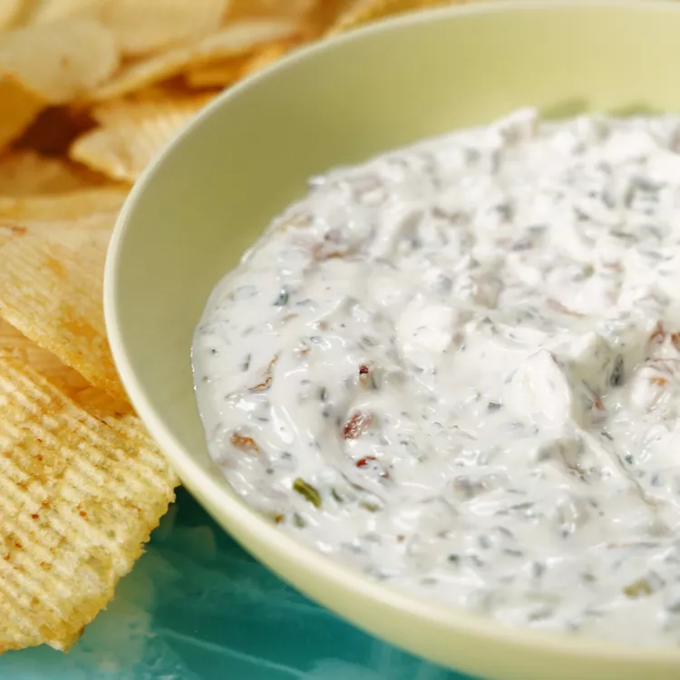

French Onion Pickle Dip

Description
The perfect play between flavor and texture, this duo-dip has something for everybody to love. The low and slow caramelization deepens the flavor of the onions, giving the dip an unmistakable made-from-scratch taste. Speckled with crunchy pickles, fresh dill, and golden onions, this cool and creamy dip has a hint of salty, sweet, and tangy in every bite. Best paired with ridge-cut potato chips or pretzels.
Ingredients
- 1 1/2 tablespoon olive oil
- 1 sweet onion, chopped
- 1 1/3 cup Greek yogurt
- 1/2 cup Japanese mayo
- 2/3 cup finely chopped cornichons
- 1 tablespoon minced fresh dill
- 1 clove garlic, minced
- ridge-cut potato chips for serving (optional)
- pretzels for serving(optional)
Directions
- Heat the oil in a large skillet over medium-low heat until warm. Add onions and sauté until reduced and caramelized, 15 to 18 minutes. Remove from heat and set aside to cool.
- Stir together Greek yogurt, kewpie mayo, cornichon pickles, dill, garlic, salt, and pepper in a bowl until well combined. Once cooled, stir in caramelized onions. Serve immediately with potato chips.